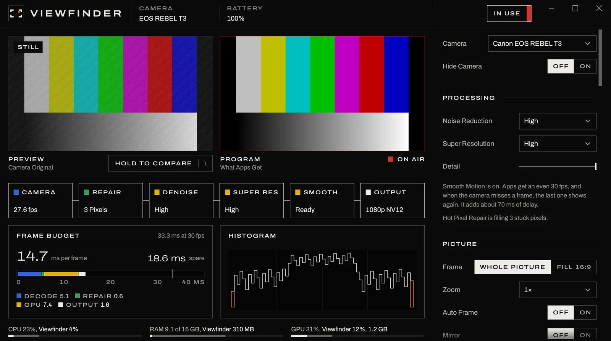
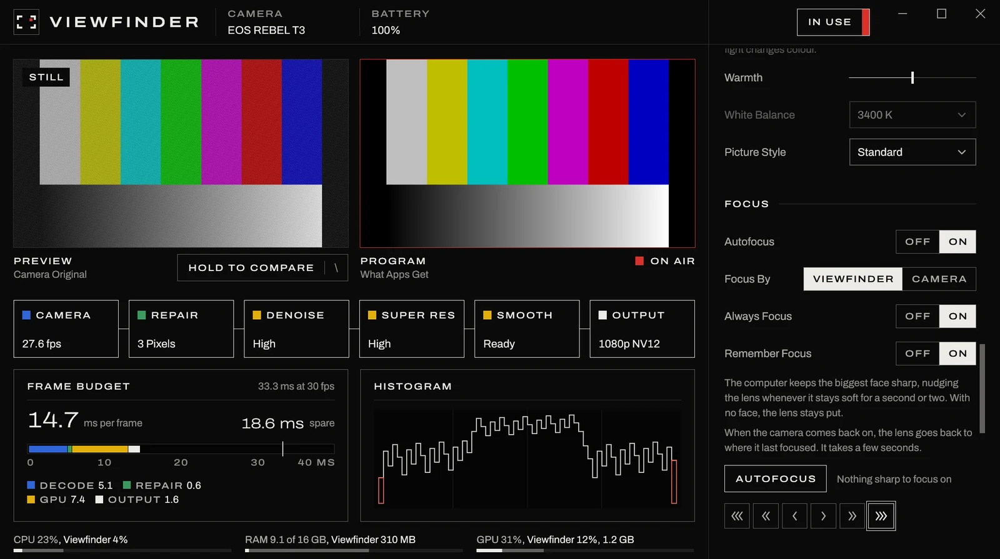
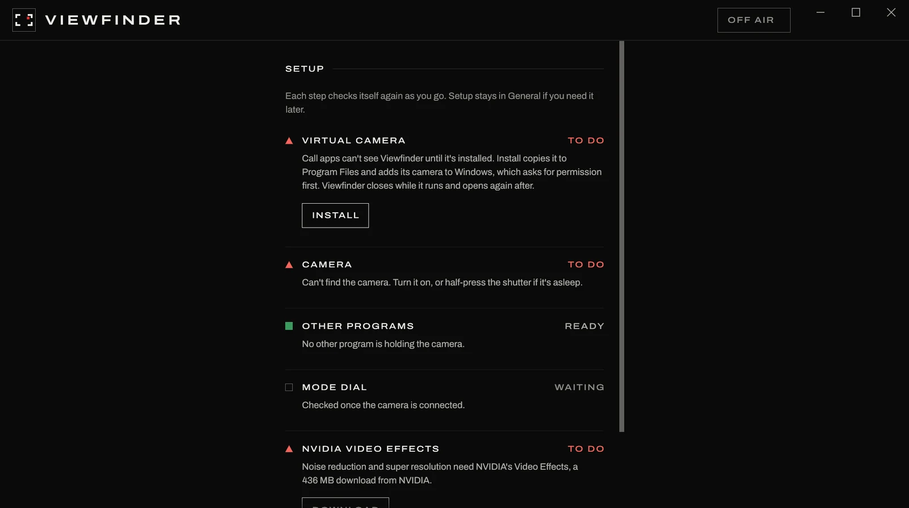

On Air
Your Canon EOS Camera as a Windows Webcam
Viewfinder is a free app that turns a Canon EOS Rebel T3, a camera Canon's EOS Webcam Utility leaves out, into a webcam for Zoom, Teams, Discord, OBS and your browser. It takes other EOS and PowerShot bodies, Nikon and Sony live view, and ordinary webcams too.
Free and open source under the MIT licence. About 4 MB.

What It Does
Drives the Camera
Live view over USB with Canon's own commands, at about 28 fps on a T3, with no capture card.
Steady Picture
Exposure holds still and white balance goes by your skin, so a lamp turning on doesn't turn you orange.
Face Autofocus
Keeps the biggest face sharp when you lean in or sit back, and puts the lens back where it was next time.
Cleaner Frames
NVIDIA VideoSuperRes noise reduction and super resolution on RTX cards, and CPU sharpening without one.
Stuck Pixel Repair
Fills in the hot pixels an older sensor grows as it warms up.
Even Frame Rate
Apps get a steady frame rate, and a frame the camera missed is filled with the last one.
Auto Adjust
Exposure, contrast, colour and vignette, set from one press or by hand, with zoom and Auto Frame.
Hotkeys
Ctrl+Alt+H hides the camera and Ctrl+Alt+F focuses, even while another app is in front.

Install
- Download Viewfinder.zip and unzip the whole thing into a folder.
- Open
viewfinder.exe. It isn't signed, so if Windows says it protected your PC, choose More Info and then Run Anyway. - Press Install in Setup. Windows asks for permission, and Viewfinder copies itself to Program Files and adds its camera to Windows.
- With an NVIDIA RTX card, press Download to get NVIDIA's Video Effects, about 436 MB.
- Turn the camera on with the mode dial on P, Tv, Av or M, plug it in over USB, and pick Viewfinder in your call app.

Questions
- Can I use a Canon EOS Rebel T3 as a webcam?
- Yes. Canon's EOS Webcam Utility leaves the Rebel T3 (EOS 1100D) out, and Viewfinder drives its live view over USB instead, at about 28 frames a second.
- Which cameras work?
- The Rebel T3 first, and other Canon EOS and PowerShot bodies with live view over USB, Nikon and Sony live view, and ordinary webcams.
- Do I need an NVIDIA graphics card?
- No. An RTX card adds noise reduction and super resolution, and without one the picture is sharpened on the CPU and everything else works the same.
- Which apps can use the camera?
- Any app that lists webcams, including Zoom, Microsoft Teams, Google Meet in a browser, Discord and OBS.